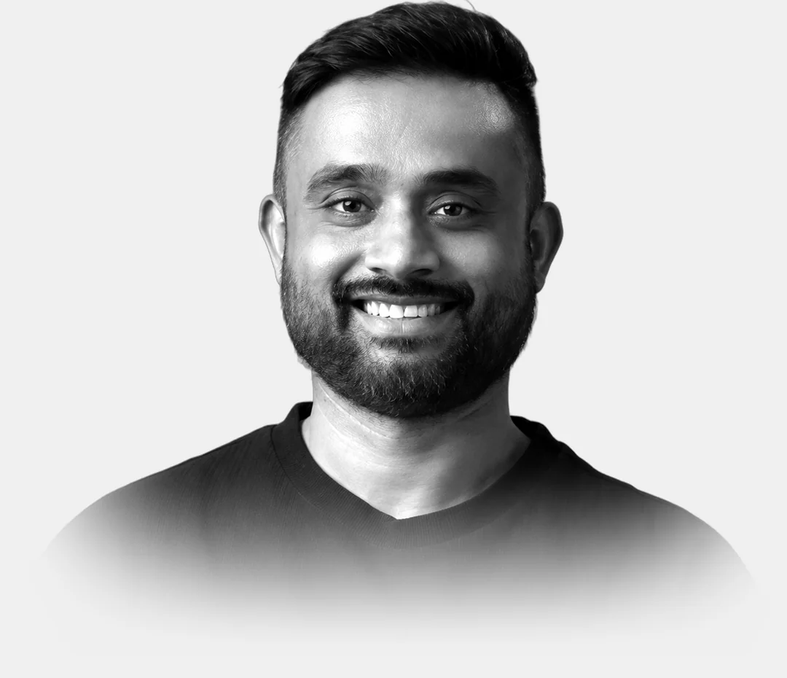
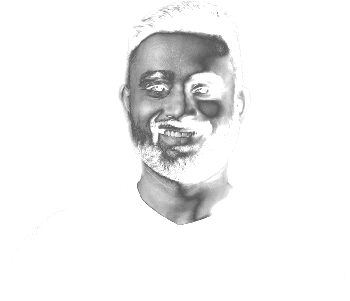

Sujith Kumar Anand
Senior Product Design Manager — a design leader who still ships
Eleven years of product design, most recently in fintech, turning complex products into ones people trust. I lead the team, build the ways of working that let it scale, and still ship front-end with AI. Rooted in HCI research; grounded in engineering.


- Emailsuj009@gmail.com
- LinkedInlinkedin.com/in/suj009 ↗
- Portfoliosujith.design ↗
- 11Years in product design
- 3Products launched 0 → 1: Airtel TV Africa, Reach Mobile, Nexter Finance
- 9Roles, from research labs and startups to a brokerage with over a million customers
- 4Countries studied and worked in: India, the UK, Sweden, Germany
Career
2014 — todayExperience
9 roles-
01FYERS2024 — Present
Senior Product Design Manager Current
- Lead product design across seven verticals for an Indian brokerage with over a million customers, reporting to the AVP of Product, with a team of five designers today (eight at its largest).
- Led the team through two organisational changes as design moved into Product: from three verticals under the CXO to every vertical, then seven once the load was rebalanced.
- 33 features shipped since February 2024, 24 of them after May 2025, including eight of the nine flagship launches, among them FYERS Automate, Stock Screeners, Strategy Builder and Fixed Deposits.
- Each designer owns a problem end to end; I set the quality bar and review every design after its product manager.
- Three revamps of how the product looks in seven months, August 2025 to March 2026, run under my management.
- A leading voice for moving from a split UX/UI relay to end-to-end Product Designers.
- Delivered Wealth 360 end to end — PRD and an AI-generated concept through to Flutter-ready web and mobile; the front-end team estimated roughly 70% less front-end effort.
- Leading AIDA, an internal agentic design framework that takes designers and product managers from idea to Flutter code; proven on Wealth 360, now rolling out across design and product.
- Two in-house hiring drives as the CXO’s design organisation grew to 28 people; ran the second round, ahead of the final round.
-
02Nexter Finance2022 — 24
Design Lead · web3 / DeFi
- Took a decentralised prediction market (crypto, stocks, commodities and real-world events) from zero to launch; led and personally designed desktop and mobile web.
- Proposed launching Lossy Predictions first and a phased release, so the team shipped while scope was still moving; ran usability testing with six users. By January 2024 it had handled $19M+ in volume and 1.7M+ predictions, and earned $242K in fees.
-
03Oddz Finance2021 — 22
Design Lead · DeFi
- Led design of complex trading and options flows for non-expert users.
-
04Datami2018 — 21
Senior Product Designer → Lead Product Designer
- Airtel TV Africa — the only designer, end to end, across 14 African markets; 450,000+ registered users in the first three by 2020.
- Reach Mobile — one of its first two designers, from zero to launch; led the website and mobile web, where 98% of sales happened, and rebuilt the purchase flow.
-
05Two Roads Tech (Qplum)2017 — Mar 18
Product Designer
- Owned all web journeys for Qplum, an AI-based portfolio-investment platform for US investors.
-
06Onetech VenturesOct 2016 — Apr 17
UX Specialist · Bangalore
- Web applications end to end — requirements gathering, interviews, design walkthroughs, empathy and scenario maps, wireframes, UI and prototypes.
-
07IBM Studios, BöblingenFeb — Jun 2016
UX Design & Research Intern
- IBM BPM Process Portal — two projects from paper sketches and wireframes through interviews and design walkthroughs with business partners and internal users.
-
08emocial Ltd · freelance2015 — 16
UX Design · London
- Responsive web applications — personas, information architecture, task flows, wireframes and prototypes; plus a freelance engagement for a London non-profit.
-
09Microsoft2014 — 15
UX Research · United Kingdom
- Field research on care technology with UCL & Kent County Council — interviews, diary studies, usability testing.
Education
3 degrees · 1 certificate- MSc, Human-Computer Interaction & Design2013 — 15
EIT Digital — KTH Stockholm, then UCL London
- MSc, Advanced Computer Science2011 — 12
Newcastle University
- BE, Information Science & Engineering2006 — 10
BMS College of Engineering, Bangalore
- NISM Series VII (India)Certified
Securities Operations and Risk Management. Series VIII, Equity Derivatives, in progress.
Skills & context
What I do
Domains
Languages
English (full professional) · Kannada · Telugu · Tamil (professional) · Hindi
Let’s build something worth using.
Open to Head of Design roles · Bengaluru or remote